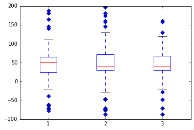
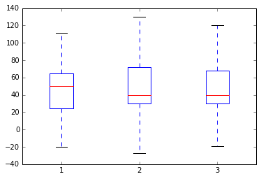
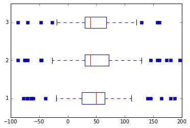
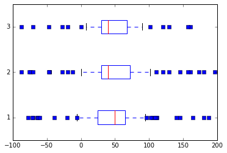

Data Mining
A course covering data mining concepts, methodologies, and programming. Topics include decision tables and trees, classification and association rules, clustering, pattern analysis, and linear and statistical modeling. Additional topics may include data cleaning and warehousing and techniques for text and web mining.
Machine Learning: An Algorithmic Perspective by Stephen Marsland (2nd edition). Required. Link
CSCI 221, MATH 207, MATH 250
Professor: Dr. Paul Anderson
Office: 313 Harbor Walk East
Office Hours: Tuesday and Thursday from 10 - 11:20. AM
Office Hour Policy: My door is always open. Even if it isn't because of hallway noise, please knock. I love to hear from students. If you would like an appointment, please e-mail me.
E-mail: andersonpe2@cofc.edu
Phone: 843-953-8151
Tuesday and Thursday from 11:20 AM - 12:35 PM in HWEA 301
Exams - 60%
Homework - 10%
Programming Projects - 20%
Final Project and Presentation - 10%
A: 90-100; B: 80-89; C: 70-79; D: 65-69; F: <65. Plusses and minuses will be used at the discretion of the instructor.
Submitted work requires Analysis, Evaluation, and Creation of ideas, concepts, and materials into various deliverables (e.g., see revised Bloom's Taxonomy (http://www.nwlink.com/~donclark/hrd/bloom.html) and reference below).
The grade of A is for work that involves high-quality achievement in all three Bloom areas.
The grade of B is for work that involves high-quality achievement in at least two Bloom areas, and mediumlevel
achievement in the other.
The grade of C is for work that involves high-quality achievement in at least one Bloom area, and mediumlevel
achievement in the others.
The grade of F is for work that does not meet above criteria.
Reference: Errol Thompson, Andrew Luxton-Reilly, Jacqueline L. Whalley, Minjie Hu, and Phil Robbins. 2008. Bloom's taxonomy for CS assessment. In Proceedings of the tenth conference on Australasian computing education
Student performance will be accessed through weekly exams. Each exam will cover the material from the previous week. They will last no more than 15 minutes. No makeup exams will be allowed. Your lowest exam grade will be dropped.
Homework will be assigned each week and collected each Thursday before the weekly exam. Homework will be graded pass or fail and are designed to help you study for the exams. For the majority of the classes, the worksheets will double as assigned homework for you to turn in before the following exam.
Programming projects will be submitted through the Learn2Mine environment. You may use either Python or R to complete the assignments. Usernames and passwords will be supplied, but you may install your own software as well on your local computer.
You must do your work alone (or with your teammates, for group assignments).
You must identify your sources of material and inspiration. It is a violation of the honor code to present
someone else's work or ideas as your own.
In any course deliverable, you must always identify the person(s) that helped you (directly or indirectly), if
any, and explain their contribution to your work.
Also see the College of Charleston Student Handbook, especially sections on The Honor Code (p. 11), and
Student Code of Conduct (p. 12). There is other useful information there.
No late days will be allowed without an excuse. This course is an upper level course, and it will move very fast. Falling behind on assignments will make it difficult to achieve the learning outcomes of this course.
April 28th from 8 - 11 AM. This time will be used for final project presentations.
Everyone must join the Facebook group for class discussions: https://www.facebook.com/groups/1534410590185173/
You are responsible for coming prepared to class. This includes reading through the material before attending class. You will get a lot more out of the lectures and discussions in this manner. It is cliche, but true. Each week will follow a similar pattern. On Tuesday new material will be introduced and discussed. Thursday will start with an exam over the previous week's material. Followed by an interactive exercise. This will sometimes be guided. sometimes in groups, and sometimes individually. The schedule below is tentative and subject to change. You must check it regularly.
No class
%matplotlib inlineTake-aways: Great for collecting items. Notice that you can mix types.
mylist = [0, 3, 2, 'hi']
mylist[0] = 2
print mylist[0]2
import copy
clist = copy.deepcopy(mylist) # Necessary if you have nested objectsprint mylist[2:4] # Returns elements in index 2 and 3.
print mylist[0:4:2] # mylist[start:end:step]
print mylist[:] # Returns the whole list and a shallow copy[2, 'hi']
[2, 2]
[2, 3, 2, 'hi']
mylist.sort()
print mylist[2, 2, 3, 'hi']
mylist.append(3)
print mylist[2, 2, 3, 'hi', 3]
print mylist.count('hi')
print mylist.count(3)1
2
otherlist = [-1,-2,-3]
mylist.extend(otherlist)
print mylist[2, 2, 3, 'hi', 3, -1, -2, -3]
mylist.index(2)0
mylist.index(-5)---------------------------------------------------------------------------
ValueError Traceback (most recent call last)
<ipython-input-20-c383587f266d> in <module>()
----> 1 mylist.index(-5)
ValueError: -5 is not in list
mylist.insert(1,'a')print mylist[2, 'a', 2, 3, 'hi', 3, -1, -2, -3]
print mylist.pop(1)a
print mylist.remove('hi')None
print mylist[2, 2, 3, 3, -1, -2, -3]
mylist.reverse()
print mylist[-3, -2, -1, 3, 3, 2, 2]
anotherlist = [-3,-2,-1,0,0,-2,2]
mylist == anotherlistFalse
A tuple is an immutable list (read-only, doesn't change). You can reference them in the same way as lists for the most part.
mytuple = (0, 3, 2, 'h')
print mytuple[1]3
mytuple[1] = 4---------------------------------------------------------------------------
TypeError Traceback (most recent call last)
<ipython-input-29-6b61a51d3ea0> in <module>()
----> 1 mytuple[1] = 4
TypeError: 'tuple' object does not support item assignment
A dictionary is a key-value data structure that allows you to reference each element by a key.
months = {'Jan': 31, 'Feb': 28, 'Mar': 31}
print months['Jan']31
print months.keys()['Jan', 'Mar', 'Feb']
print months.items()[('Jan', 31), ('Mar', 31), ('Feb', 28)]
for key in months:
print keyJan
Mar
Feb
for (key,value) in months.items():
print key,valueJan 31
Mar 31
Feb 28
Two ways to import code
import sys
sys.path.append('mypath') # Appends mypath to the system path.a = 2
if a == 1:
print 1
elif a == 2:
print 2
else:
print 'otherwise'2
for key in months:
print keyJan
Mar
Feb
i = 0
while i < len(mylist):
print mylist[i]
i = i + 1-3
-2
-1
3
3
2
2
def pythagoras(x,y):
""" Computes the hypotenuse of two arguments"""
h = pow(x**2+y**2,0.5)
return h
print pythagoras(3,4)5.0
alist = [2,3,4]
map(lambda x:pow(x,3) + 7,alist)[15, 34, 71]
filter(lambda x:x > 2,alist)[3, 4]
x = 1
y = 'a'
try:
x/y
except ZeroDivisionError:
print "Divisor must not be 0"
except TypeError:
print "They must be numbers"
except:
print "Something unspecified went wrong"
else:
print "Everything worked!"They must be numbers
x = 1
y = 0
try:
x/y
except ZeroDivisionError:
print "Divisor must not be 0"
except TypeError:
print "They must be numbers"
except:
print "Something unspecified went wrong"
else:
print "Everything worked!"Divisor must not be 0
class CofC:
def __init__(self,bestDept):
self.bestDept = bestDept
def whatIsTheBestDepartment(self):
return self.bestDeptuniv = CofC('Computer Science')
print univ.whatIsTheBestDepartment()Computer Science
import numpy as npmyarray = np.array([4,3,2])
mybigarray = np.array([[3,2,4],[3,3,2],[4,5,2]])print myarray[4 3 2]
print mybigarray[[3 2 4]
[3 3 2]
[4 5 2]]
mybigarray is an example of how we will create matrices
np.arange(5)array([0, 1, 2, 3, 4])
np.arange(3,7,2) # start, stop, steparray([3, 5])
np.ones((3,4))array([[ 1., 1., 1., 1.],
[ 1., 1., 1., 1.],
[ 1., 1., 1., 1.]])
np.zeros((3,4))array([[ 0., 0., 0., 0.],
[ 0., 0., 0., 0.],
[ 0., 0., 0., 0.]])
np.eye(3)array([[ 1., 0., 0.],
[ 0., 1., 0.],
[ 0., 0., 1.]])
np.linspace(3,7,3)array([ 3., 5., 7.])
np.linspace(3,7,5)array([ 3., 4., 5., 6., 7.])
np.linspace(3,7,6)array([ 3. , 3.8, 4.6, 5.4, 6.2, 7. ])
np.r_[1:4,0,4] # Row concatenationarray([1, 2, 3, 0, 4])
np.c_[np.arange(3),np.arange(3)] # Column concatenationarray([[0, 0],
[1, 1],
[2, 2]])
np.size(np.eye(3))9
np.shape(np.eye(3))(3, 3)
print np.arange(6)
print np.arange(6).reshape(3,2)[0 1 2 3 4 5]
[[0 1]
[2 3]
[4 5]]
np.ravel(np.eye(3))array([ 1., 0., 0., 0., 1., 0., 0., 0., 1.])
np.arange(6)[::-1] # Reverse the orderarray([5, 4, 3, 2, 1, 0])
np.min(np.arange(6))0
np.max(np.arange(6))5
np.copy(np.arange(6))array([0, 1, 2, 3, 4, 5])
a=np.arange(6).reshape(2,3)
b=np.ones((2,3))
print a
print b[[0 1 2]
[3 4 5]]
[[ 1. 1. 1.]
[ 1. 1. 1.]]
a+barray([[ 1., 2., 3.],
[ 4., 5., 6.]])
a*(b+1) # Element wise operations!array([[ 0., 2., 4.],
[ 6., 8., 10.]])
np.dot(a,b) # Matrix multiplication, but the dimensions don't agree!---------------------------------------------------------------------------
ValueError Traceback (most recent call last)
<ipython-input-71-c8af594e789d> in <module>()
----> 1 np.dot(a,b) # Matrix multiplication, but the dimensions don't agree!
ValueError: shapes (2,3) and (2,3) not aligned: 3 (dim 1) != 2 (dim 0)
np.dot(np.transpose(a),b)np.dot(a,np.transpose(b))pow(a,2)np.random.rand(3,2) # uniformly distributed random numbers between 0 and 1np.random.randn(3,2) # normally distributednp.random.normal(1,2,(3,2)) # with mean of 1 and standard deviation of 2np.random.uniform(-1,3,(3,2)) # random uniform numbers between -1 and 3np.random.randint(1,10,(3,2)) # random integers between 1 and 10import matplotlib.pyplot as plt
import numpy as np
# fake up some data
spread = np.random.rand(50) * 100
center = np.ones(25) * 50
flier_high = np.random.rand(10) * 100 + 100
flier_low = np.random.rand(10) * -100
data = np.concatenate((spread, center, flier_high, flier_low), 0)# basic plot
plt.boxplot(data);
# notched plot
plt.figure()
plt.boxplot(data, 1);# change outlier point symbols
plt.figure()
plt.boxplot(data, 0, 'gD');
# don't show outlier points
plt.figure()
plt.boxplot(data, 0, '');
# horizontal boxes
plt.figure()
plt.boxplot(data, 0, 'rs', 0);
# change whisker length
plt.figure()
plt.boxplot(data, 0, 'rs', 0, 0.75);
# fake up some more data
spread = np.random.rand(50) * 100
center = np.ones(25) * 40
flier_high = np.random.rand(10) * 100 + 100
flier_low = np.random.rand(10) * -100
d2 = np.concatenate((spread, center, flier_high, flier_low), 0)
data.shape = (-1, 1)
d2.shape = (-1, 1)
# data = concatenate( (data, d2), 1 )
# Making a 2-D array only works if all the columns are the
# same length. If they are not, then use a list instead.
# This is actually more efficient because boxplot converts
# a 2-D array into a list of vectors internally anyway.
data = [data, d2, d2[::2, 0]]
# multiple box plots on one figure
plt.figure()
plt.boxplot(data);---------------------------------------------------------------------------
AttributeError Traceback (most recent call last)
<ipython-input-73-9744903c53b9> in <module>()
17 flier_low = np.random.rand(10) * -100
18 d2 = np.concatenate((spread, center, flier_high, flier_low), 0)
---> 19 data.shape = (-1, 1)
20 d2.shape = (-1, 1)
21 # data = concatenate( (data, d2), 1 )
AttributeError: 'list' object has no attribute 'shape'



Spring break